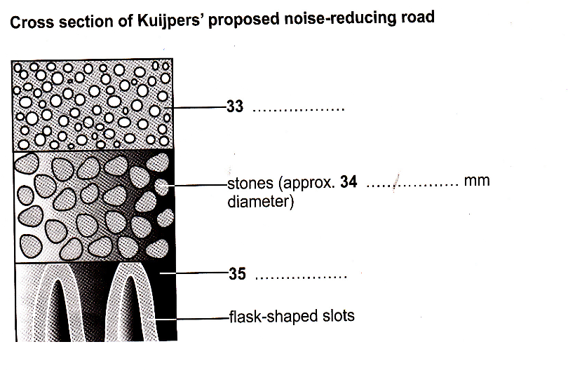

Reading Passage 1 has nine paragraphs A-I.
Choose the correct heading for Paragraphs B and D-H from the list of headings below.
Write the correct number (i-xi) in boxes 1-6 on your answer sheet.
| Example | Answer |
|---|---|
| Paragraph A | x |
| Paragraph C | xi |
1 Paragraph B
2 Paragraph D
3 Paragraph E
4 Paragraph F
5 Paragraph G
6 Paragraph H
Choose the correct answer A, B, C or D.
Write your answers in boxes 7-10 on your answer sheet.
People initially found Kahneman's work unusual because he
The writer mentions house-owners attitudes towards the value of their homes to illustrate that
Stubbornness and inflexibility can cause problems when people
Why do many Americans and Europeans fail to spread their financial risks when investing?
Answer the questions below, using NO MORE THAN THREE WORDS for each answer.
Write your answers in boxes 11-13 on your answer sheet.
11 Which two occupations may benefit from being over-optimistic?
12 Which practical skill are many people over-confident about?
13 Which type of business has a generally good attitude to dealing with uncertainty?
Do the following statements agree with the information given in Reading Passage 2?
In boxes 14-18 on your answer sheet write
TRUE if the statement agrees with the
information
FALSE if
the statement contradicts the information
NOT GIVEN if
there is no
information on this
The inventors of cinema regarded it as a minor attraction.
Some directors were aware of cinema's artistic possibilities from the very beginning.
The development of cinema's artistic potential depended on technology.
Cinema's possibilities were developed in varied ways in different western countries.
Western businessmen were concerned about the emergence of film industries in other parts of the world.
Complete the notes below using the list of words (A-K) from the list below.
Chinese cinema
• large number of 19
films produced in 1930s
• some early films still generally regarded as 20
Indian cinema
• films included musical interludes
• films avoided
21
topics
Japanese cinema
- unusual because film director was very 22
-
two important directors:
Mizoguchi - focused on the 23
restrictions faced by women
- camera movement related to
24
content of film
Ozu - 25
camera movement
A emotional
B negative
C expensive
D silent
E social
F outstanding
G little
H powerful
I realistic
J stylistic
K economic
You should spend
about 20 minutes on Questions 27 - 40,
which
are based
on
Reading Passage 3 below.
Reading Passage 3 has ten paragraphs labelled A-J.
Which paragraph contains the following information?
27 a description of the form in which Kuijpers' road surface is taken to its destination
28 an explanation of how Kuijpers makes a smooth road surface
29 something that has to be considered when evaluating Kuijpers' proposal
30 various economic reasons for reducing road noise
31 a generalisation about the patterns of use of vehicles on major roads
32 a summary of the different things affecting levels of noise on roads
Label the diagram below.
Choose NO MORE THAN ONE WORD AND/OR A NUMBER from the passage for each answer.
Write your answers in boxes 33-35 on your answer sheet.

33
34
35
Complete the table below using the list of words (A-K) from the box below.
Kuijpers' noise-reducing road: Components and function
| Layer | Component | Function |
|---|---|---|
| Upper and lower | stones | - reduce oscillations caused by 36 - create pores which help 37 |
| Foundation | slots | - convert 38
to heat - help to remove 39 - can be adapted to absorb different 40 |
A frequencies
B the engine
C rubbish
D resonators
E air flow
F dissipation
G sound energy
H pores
I lanes
J drainage
K sources